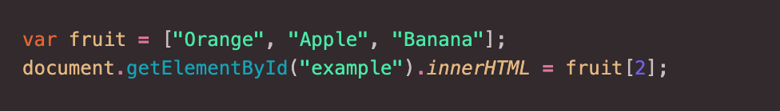

Sprint 3 - Tech Blog
HTML vs. CSS
HTML is one of the building blocks of a web page. You might liken it to the construction of a building. For this example, let’s use an office tower. In order for the tower to stand up it needs a steel and concrete structure to be built. This is strong and rigid and allows many floors to be stacked on top of one another, similar to how you have stacked elements in a web page: a heading, a sub-heading, paragraphs, images, and so on. Across different buildings, the structure can be different to account for different designs, but for the most part one is similar to the other.

CSS would be the facade of the building (and the interior fit-out). It finishes the building off. A facade can be done in many different ways, with many different material types. It could be glass, or timber, or zinc, made of green-walls, or a composite material being tested out and shown to the world for the first time. There are an abundance of different options that help to make the building look unique. It should be noted though that the facade is only able to stand when it has a strong connection back to the structure of the building, and the two need one another in order to make the final product a success.
Control Flow and Loops
Control flow: Control flow is the approach that your computer takes when it reads your code. It reads in order from left to right, top to bottom. It is important that the layout and structure of your code is considered, so that your computer is able to output the information in the way you have intended it. For example, if you wanted to go out for a walk you would (most often) put on your shoes. There is an order of activities that results in you having your socks on, shoes on, and laces tied ready to go out for this walk. If you first tied your shoelaces, then put the sock over the shoe, there’d be nowhere for your foot to go!
Loops: Sometimes when you write code there are occasions when you want to perform a task repeatedly. One way of doing this is to write out that code over and over again. A loop is a function that saves you time by writing the task out only once. A loop repeats a set of given instructions over and over until a prescribed condition is met, or becomes ‘true’. Returning to the analogy of going out for a walk, in order to get ready you would put on a sock, then a shoe, and then tie your shoelaces. You would repeat this same process on the other foot. When you have no more feet to prepare for the walk, our made up loop ends and you are able to leave the house with both shoes on correctly.
The DOM (Document Object Model)
The DOM, or Document Object Model, is a programming interface. It represents the web page document in a tree-like structure of objects and nodes.

Typically a web page document is represented visually in the browser or as HTML source code - in both cases the same document. The DOM is an object-oriented representation of this document that can be modified with scripting languages, such as JavaScript. JavaScript uses the DOM to access the document and its elements (objects and nodes) and is able to interact with and manipulate them.
One way of interacting with the DOM is by using Chrome’s DevTools on a web page. You can inspect the HTML and CSS of the page and you can interfere with it, changing colours and text, moving things around or deleting things entirely. Don’t worry, when you refresh the page all of your mischievous changes will have reverted to the original.
Arrays and Objects
Arrays and objects are data structures that can be visualised as containers for other datatypes in Javascript.
Javascript arrays are used to store multiple values in a single variable. What if you had 1000 different types of fruit? You don’t want to have to write out a single variable for each one. An array can hold many values under a single name, and you can access the values by referring to an index number. Arrays use the ‘0 index’ method of counting where the computer counts the first item as the ‘0th’ item as opposed to the ‘1st’.
To access the elements contained in an array you refer to its index number. For example, to access the third item in my list of fruit:
Javascript objects allow you to create a container variable that has multiple properties with values assigned to them. These values are written as ‘name-value’ pairs where the name and value are separated by a colon. For example, a person has properties with values for each:

You can access object properties in two ways: dot notation and square bracket notation. You will name (call) the object and then, via your chosen notation type, name the property.
Functions
Functions are blocks of code that can be named and reused. They consist of a set of statements that performs a task or calculates a value. A function is executed when something invokes it (calls it) from somewhere else in your code.